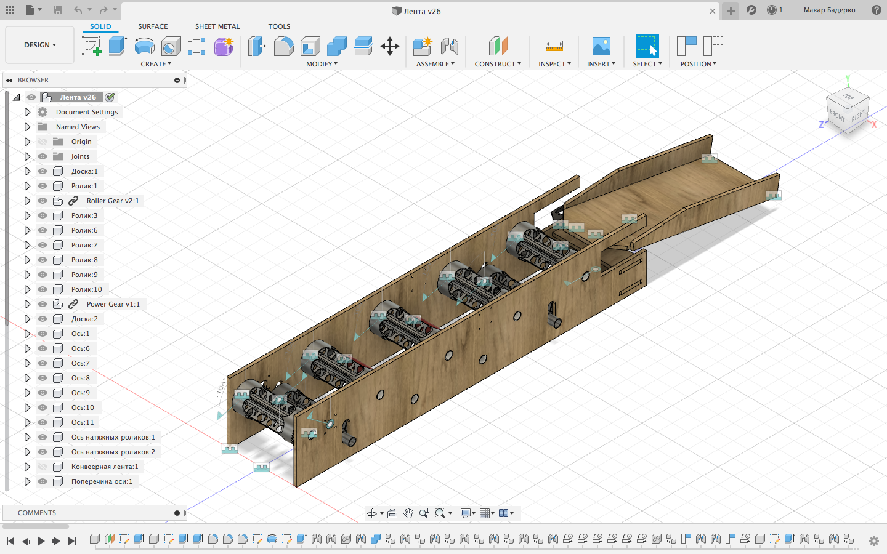
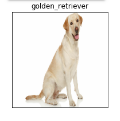
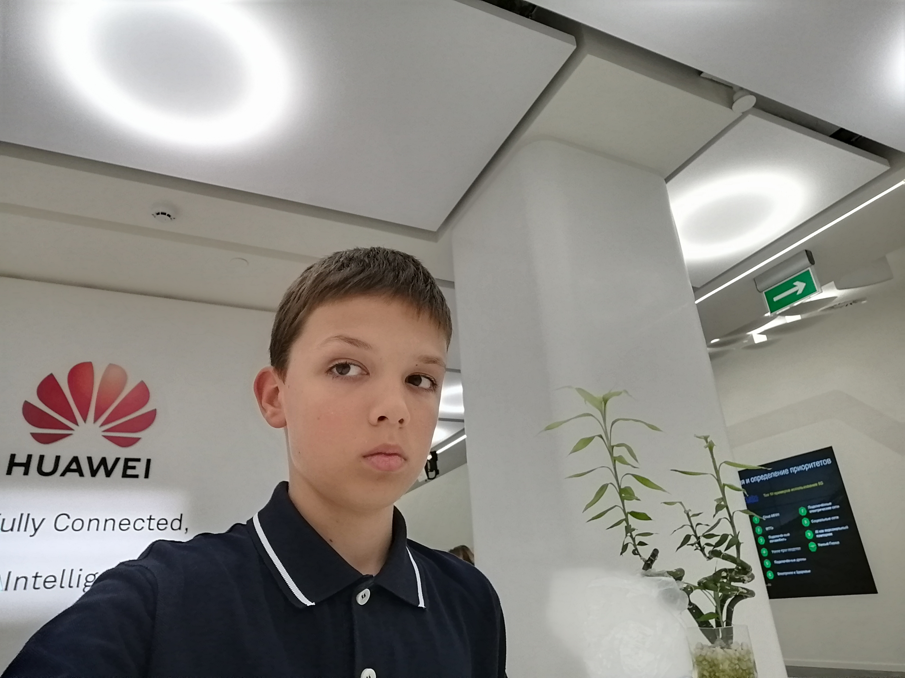

Down here, I listed my best projects on Python and other languages. So, let's get started!

It's a convier, that can auomatically sort trash. I made it with Python3 (Programming language that's usually used to build machine learning models) and Tensorflow 2.0 (One of the biggest Python machine learning libraries and Arduino (Microcomputer).

This project can identify breed of a dog by photo. Made with Python and Tensorflow 2.0! I spent a lot of time to improve my model and submitted it to kaggle! I used mobile-net-v2 with adam optimizer, softmax activation function and categorical crossentropy loss function. It's a multiclass imge-classification machine learning model. Dataset was provided by kaggle's dog-breed-identification competition.
I've made a lot of projects, but my best are listed above. Below I'll tell you about my other projects.
I love Kaggle's competitions. They're very interesting. Titanic and Boston Housing were my forst challenges there. Now, I'm working on the "M5 forecasting" challenge by the University of Nicosia. I've done many projects just for fun, for example: two ai's play chess against each other, learn and get different results and strategies! Also, I tested best of them on online chess playing websites(not competition!). One of my favourites is flappy bird - my neural net was playing it very nice! Also, I've made a parser thate plays google chrome dino on chrome://dino. I've done many other projects, you can find ifo about them in my github account and on my Medium blog.
